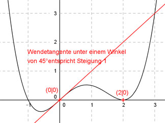

Aufgabe 81 Der Graph einer ganzrationalen Funktion 4. Grades berührt im Punkt (2|0) die x-Achse, hat im Punkt (0|0) einen Wendepunkt, und die Wendetangente schneidet die x-Achse unter einem Winkel von 45°. Wie lautet seine Funktionsgleichung?  Allgemeine Form einer ganzrationalen Funktion 4. Grades: f(x) = ax4 + bx3 + cx2 + dx + e f’(x) = 4ax3 + 3bx2 + 2cx + d f’’(x) = 12ax2 + 6bx + 2c 5 Bedingungen: 1. Berührt im Punkt (2|0) die x-Achse bedeutet zum einen: f(2) = 0 --> a * 24 + b * 23 + c * 22 + d * 2 + e = 0 --> 16a + 8b + 4c + 2d + e = 0 I 2. Berührt im Punkt (2|0) die x-Achse bedeutet zum anderen: f’(2) = 0 --> 4a * 23 + 3b * 22 + 2c * 2 + d = 0 --> 32a + 12b + 4c + d = 0 II 3. Hat im Punkt (0|0) einen Wendepunkt bedeutet zum einen: f(0) = 0 --> a * 04 + b * 03 + c * 02 + d * 0 + e = 0 --> e = 0 4. Hat im Punkt (0|0) einen Wendepunkt bedeutet zum anderen: f’’(0) = 0 --> 12a * 02 + 6b * 0 + 2c = 0 --> 2c = 0 |:2 --> c = 0 5. Die Wendetangente schneidet die x-Achse einem Winkel von 45° bedeutet, tan 45° = 1 --> Steigung der Tangente = 1: f’(0) = 1 --> 4a * 03 + 3b * 02 + 2c * 0 + d = 1 --> d = 1 I * (-2) + II (c = 0 und d = 1 und e = 0 eingesetzt): -32a - 16b - 4 = 0 32a + 12b + 1 = 0 ------------------- -4b - 3 = 0 |+3 -4b = 3 |:(-4) b = -3/4 = -0,75 b = -0,75 und c = 0 und d = 1 und e = 0 in I eingesetzt: 16a + 8 * (-0,75) + 2 * 1 = 0 16a - 6 + 2 = 0 16a - 4 = 0 |+4 16a = 4 |:16 a = 4/16 = 1/4 = 0,25 Gesuchte Funktionsgleichung: f(x) = 0,25x4 - 0,75x3 + x